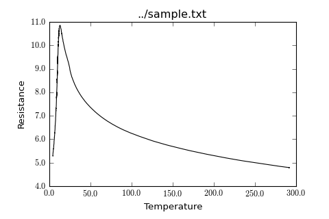

Stoner.Plot.DefaultPlotStyle¶
- class Stoner.Plot.DefaultPlotStyle(**kargs)¶
Produces a default plot style.
To produce alternative plot styles, create subclasses of this plot. Either override or create additional attributes to define rc Parameters (see Matplotlib documentation for available rc parameters) and override the :py:meth:Stoner.PlotFormats.DefaultPlotStyle.customise` method to carry out additional plot formatting.
- fig_width_pt¶
float
Preferred width of plot in points
- show_xlabel¶
bool
Show the title in the plot
- show_ylabel¶
bool
Show the x-axis Labels
- show_zlabel¶
bool
show the y-xaxis labels
- show_title¶
bool
show the title
- show_legend¶
bool
show the legend
- stylename¶
string
Name of the matplotlib style to use
- stylesheet¶
list
Calculated list of stylesheets found by traversing the class heirarchy
Example
from Stoner import Data from Stoner.PlotFormats import DefaultPlotStyle d=Data("../sample.txt",setas="xy",template=DefaultPlotStyle) d.plot()
(Source code, png, hires.png, pdf)
Methods
__call__(**kargs) Calling the template object can manipulate the rcParams that will be set. __init__(**kargs) Create a template instance of this template. annotate(ix, multiple, plot, **kargs) Call all the routines necessary to annotate the axes etc. apply() Scan for all attributes that start templtate_ and build them into a dictionary to update matplotlib settings with. customise() This method is supplied for sub classes to override to provide additional plot customisation after the rc paramaters are updated from the class and instance attributes. customise_axes(ax, plot) This method is run when we have an axis to manipulate. new_figure([figure]) This is called by PlotFile to setup a new figure before we do anything. update(**kargs) Update the template with new attributes from keyword arguments. Attributes
show_legend show_title show_xlabel show_ylabel show_zlabel stylename subplot_settings

{kind=link}
{kind=link}